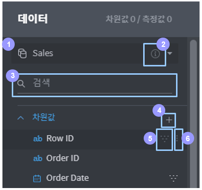

데이터 컬럼 리스트¶
데이터 컬럼 목록 구성¶
데이터 컬럼 목록에서는 연동된 데이터 소스들의 정보를 열람·수정하고, 컬럼 필터를 간편하게 추가하거나 제거할 수 있습니다.

데이터 소스 선택/설정: 데이터 소스를 선택하거나 해당 데이터 소스의 연결/join 관계를 설정합니다.
데이터 상세: 클릭하면 새 대화 상자를 통해 선택된 데이터 소스에 관한 정보를 보여줍니다
컬럼 이름으로 검색: 데이터 소스 내 컬럼을 이름으로 검색합니다.
사용자 컬럼 추가: 클릭하면 데이터 소스에 있는 컬럼들을 조합·가공하여 새로운 컬럼을 만들 수 있는 대화 상자가 열립니다. 추가된 사용자 컬럼은 대시보드 전체에서 사용할 수 있습니다.
필터 지정/해제: 이 버튼은 해당 컬럼에 마우스를 오버하면 생기며, 클릭 시 해당 컬럼을 차트 필터로 지정하고 다시 한번 클릭하면 지정된 차트 필터가 해제됩니다. 필터로 지정된 컬럼 항목에는 아이콘이 마우스 오버와 상관 없이 표시됩니다.
더 보기: 이 버튼은 해당 컬럼에 마우스를 오버하면 생기며, 컬럼에 대한 추가적인 정보를 확인하고 별칭을 지정할 수 있습니다.
- 클릭하면 새 대화 상자가 나타나면서 해당 컬럼의 요약 정보와 데이터 값들을 보여줍니다.
- Logical column name: 해당 컬럼의 논리적 컬럼명을 보여줍니다.
- Logical type: 해당 컬럼의 논리적 데이터 타입을 보여줍니다.
- Alias: 해당 컬럼에 대한 별칭을 지정할 수 있습니다. 정식 컬럼명은 영숫자와 몇 가지 특수문자로 제한되며 공백도 포함할 수 없기 때문에 보다 구분하기 편한 별칭을 등록하면 분석 시 편의를 도모할 수 있습니다. 지정된 별칭은 대시보드 전체에 적용됩니다.
- 값별칭:해당컬럼에포함된각데이터값에대해서도별칭을지정할수있습니다. 지정된 별칭은 대시보드 전체에 적용됩니다.